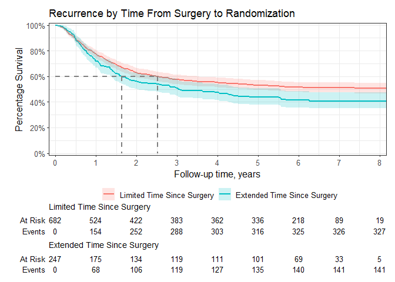

Introduction
The ggsurvfit package eases the creation of time-to-event (aka survival) summary figures with ggplot2. The concise and modular code creates images that are ready for publication or sharing. Competing risks cumulative incidence is also supported via ggcuminc().
Why ggsurvfit?
Use ggplot2 functions: Each ggsurvfit add-on function (e.g.
add_confidence_interval(),add_risktable(), etc.) is written as a proper ggplot2 ‘geom’, meaning the package functions can be woven with ggplot2 functions seamlessly. You don’t need to learn how to style the plot within the ggsurvfit functions: rather, rely on the suite of ggplot2 functions you already know.Publishable Legends: Raw variable names do not appear in the figure legend, e.g.
"sex=Female".Limitless Customization: You can modify the x-axis scales or any other plot feature and the risk table will still align with the plot.
Simple Saving Save individual images easily with
ggplot2::ggsave().
Installation
Install ggsurvfit from CRAN with:
install.packages("ggsurvfit")You can install the development version from GitHub with:
# install.packages("devtools")
devtools::install_github("ddsjoberg/ggsurvfit")Examples
Review the figure gallery for many more examples.
The code below constructs a basic {ggsurvfit} figure without customization.
library(ggsurvfit)
#> Loading required package: ggplot2
p <- survfit2(Surv(time, status) ~ surg, data = df_colon) |>
ggsurvfit(size = 1) +
add_confidence_interval() +
add_risktable() +
add_quantile(y_value = 0.6, color = "gray50", size = 0.75)Any figure created with {ggsurvfit} can be customized using {ggplot2} functions.
p +
# limit plot to show 8 years and less
coord_cartesian(xlim = c(0, 8)) +
# update figure labels/titles
labs(
y = "Percentage Survival",
title = "Recurrence by Time From Surgery to Randomization",
) +
# reduce padding on edges of figure and format axes
scale_y_continuous(label = scales::percent,
breaks = seq(0, 1, by = 0.2),
expand = c(0.015, 0)) +
scale_x_continuous(breaks = 0:10,
expand = c(0.02, 0))
survfit2() vs survfit()
Both functions have identical inputs, so why do we need survfit2()? The survfit2() tracks the environment from which the function was called, resulting in the following benefits.
- We can reliably remove the raw variable names from the figure legend, e.g.
SEX=Female. - P-values can be calculated with
survfit_p()and added to figures. - The items above are often possible using
survfit(). However, by utilizing the calling environment we are assured the correct elements are found, rather than crossing our fingers that the search path contains the needed elements.
CDISC ADaM ADTTE
The package also includes gems for those using the CDISC ADaM ADTTE data model.
If columns "PARAM" or "PARAMCD" are present in the data frame passed to survfit2(), their values will be used to construct default labels in the ggsurvfit() figure.
The event indicator in ADTTE data sets is named "CNSR" and is coded in the opposite way the survival package expects outcomes—1 = 'censored' and 0 = 'event'. This difference creates an opportunity for errors to be introduced in an analysis. The ggsurvfit package exports a function called Surv_CNSR() to resolve this concern. The function creates a survival object (e.g. survival::Surv()) that uses CDISC ADaM ADTTE coding conventions as the default values. The function can be used in ggsurvfit as well as any other package that uses survival::Surv().